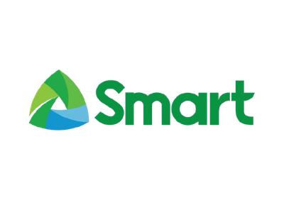
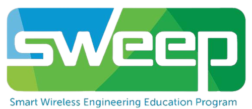
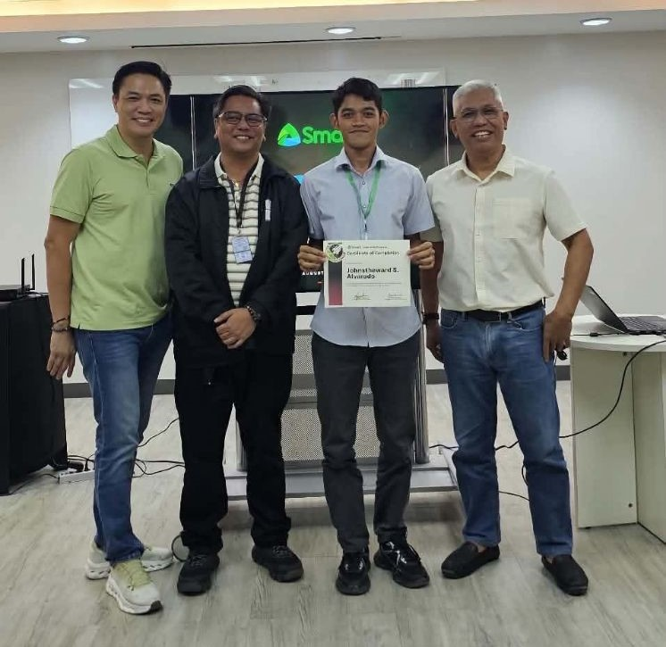
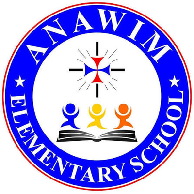
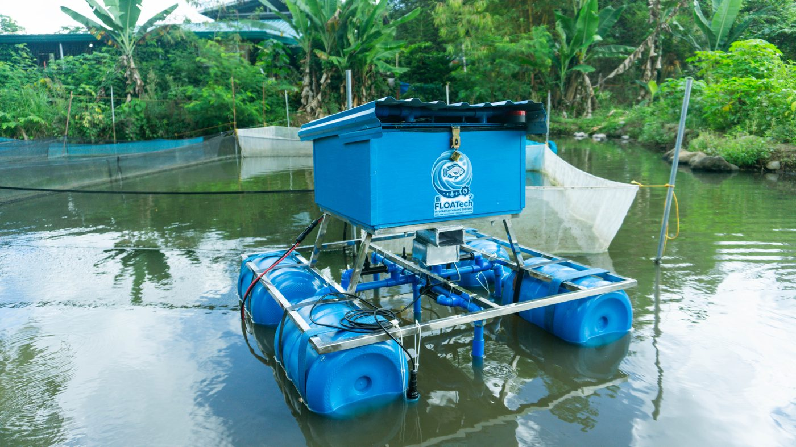

// SYSTEM STATUS: AVAILABLE FOR HIRE
JOHNSTHEWARD
S.ALVARADO
Computer Engineer — Networks, Hardware & Field Support
I diagnose systems, wire connections, and troubleshoot problems — whether that's a cell site, a classroom network, or a customer's question.
01 // ABOUT
Profile
Motivated Computer Engineering professional with hands-on experience in technical support, data management, and field operations. Currently expanding into customer-facing roles — bringing strong communication, problem-solving, and troubleshooting skills from real network and hardware environments into every interaction. Comfortable working under deadlines, following procedures precisely, and translating technical detail into clear answers.
02 // EXPERIENCE
Work Log
Smart Wireless Engineering Educational Program Participant
2026Smart Communications Inc. · Davao, Philippines


- Performed accurate data entry and analysis using Excel, Ookla Insights, and Cell Mapper to support network performance monitoring.
- Assisted in cell site installation activities, applying technical knowledge and safety protocols in field environments.
- Developed web-based HTML content and AI prompts to improve internal documentation and operational efficiency.
- Collaborated with engineering teams, demonstrating attention to detail and the ability to follow procedures under deadlines.

Network Technician / Field Technician
2024

Anawim Elementary School Inc. · Davao City, Philippines- Installed and configured wired Wi-Fi access points, ensuring reliable network connectivity for school operations.
- Performed CCTV camera installation and basic troubleshooting, providing on-site technical support to staff.
Data Entry Clerk & Sales Inventory Clerk
2023Various Assignments · Davao City, Philippines
- Maintained accurate digital records and inventory data using Microsoft Excel, ensuring data integrity and timely updates.
- Supported sales operations through precise inventory tracking and administrative coordination.
- Demonstrated reliability, organizational skills, and the ability to manage multiple tasks efficiently.
03 // KEY PROJECT
Case File

FLOATech
Arduino-Based Floating Unit for Tilapia Farms
Developed an automated floating system with real-time water-parameter feedback monitoring, automated feeding, and water aeration for Oreochromis niloticus (Tilapia) farms — combining embedded hardware, sensors, and remote monitoring into one working unit.
04 // SKILLS
Breadboard
Each row is a rail. Each pin is a skill.
05 // EDUCATION
Components
BS Computer Engineering
Holy Cross of Davao College
Previously enrolled in BS Electronics Engineering (2022–2023)
Senior High School
Davao City National High School
Junior High School
Davao City National High School
Awards & Certifications
- Networking Competition Champion (2025)
- Best Design Project — 2nd Place (2026)
- Basic Computer Networking Workshop
- Programming Workshops
- Occupational Safety and Health Orientation
- Member, Institute of Computer Engineers of the Philippines (ICpEP)
- Participant, 16th CODEE Region XI Engineering Congress
06 // CONTACT
Connect
> Who am I?
Johnstheward S. Alvarado — Computer Engineer
> Address
Block 2 Carmelite Road, Bajada, Buhangin Proper, Davao City, Davao del Sur 8000
> Contact
> _